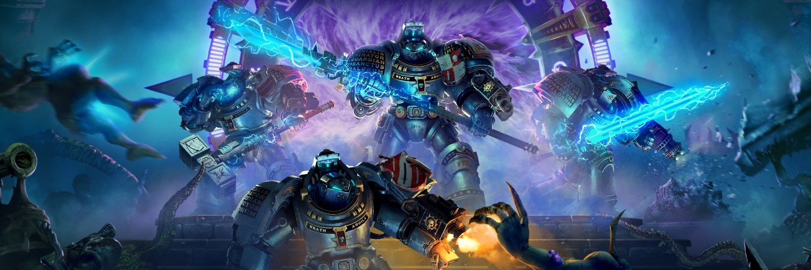

The entire Warhammer universe is one of the biggest you’ll ever come across, from board game to books to movies to video games, and within those range from various different genres. So if you’re looking for a brand new Tactical RPG game like XCOM, the upcoming Daemonhunters might be up your alley.
Thankfully, we now know exactly you can get your grubby little hands on it, as Warhammer 40,000: Chaos Gate - Daemonhunters officially launches on May 5th 2022. The new trailer showcases some gameplay, as well as introducing renowned actor Andy Serkis (Lord of the Rings) as the voice behind Vardan Kai, the Grand Master and Steward of the Armoury.
Pre-orders are now available for Warhammer 40K Chaos Gate Daemonhunters, and of course there are some pre-order bonuses as well as Special Edition on offer. Those who pre-order will get the Domina Liber Daemonica passive item as well as the Destroyer of Crys’yllix weapon. The Special Edition includes an exclusive character to play with and the game’s original soundtrack.
What do you think? Are you excited for W40K Chaos Gate Daemonhunters? What do you think of the new gameplay? And how do you feel about Andy Serkis’ role and performance in it? Let us know!
